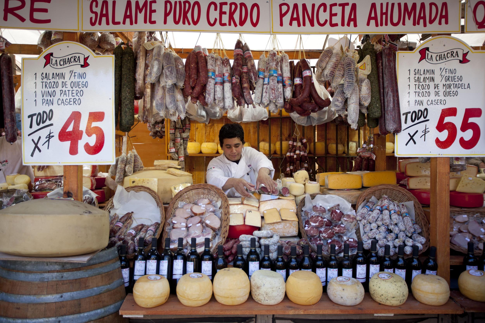
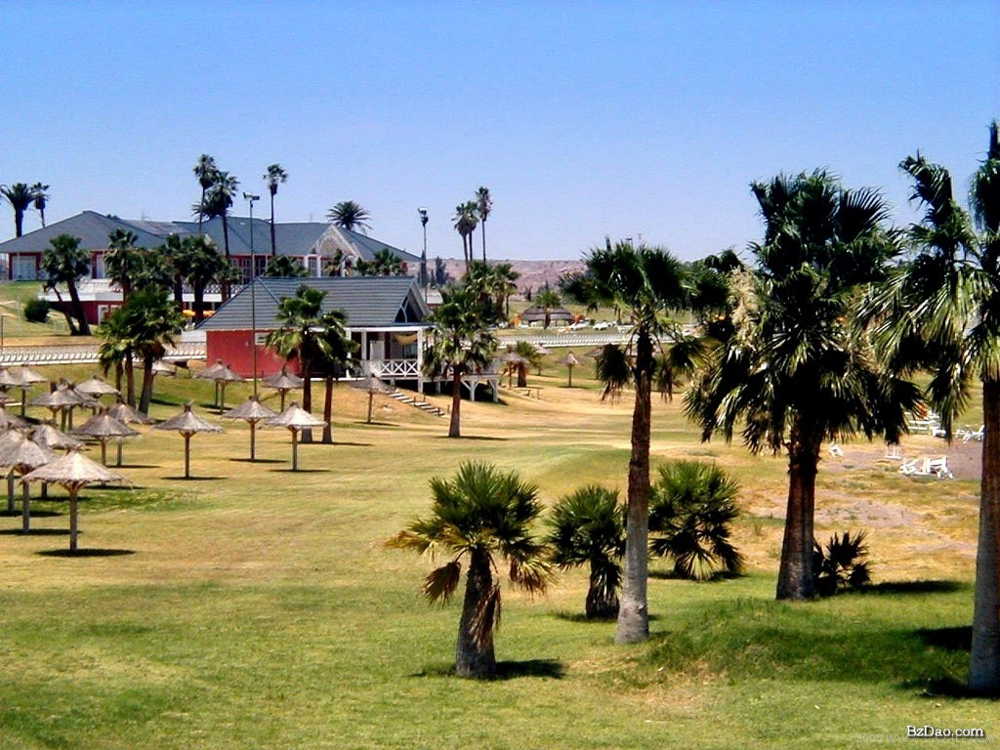
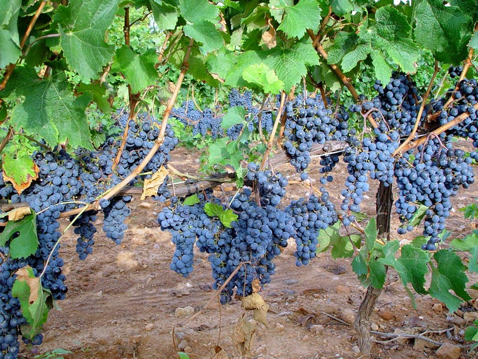

INTEGRACIÓN REGIONAL:PRINCIPALES DEBATES Y DESAFÍOS
La integración regional ofrece una posibilibdad atractiva de ampliar los mercados, incrementar las escalas de producción y, en última instancia, estimular el dinamismo ecomómico. La integración es un factor clave para atraer inversiones, aumentar la productividad, generar empleos y diversificar exportaciones. La multoplicación del comercio que favorece la proximidad geográfica induce, a su vez, fenómenos de integración física, social y cultural que confieren al espacio regional un valor estratégico en lo que respecta a la inserción en el contexto multinacional. Las singularidades de América Latina y el Caribe, el proceso de integración europea y sus efectos positivos han influido en los esfuerzos desplegados en nuestro continente.
.jpg)
En contraste con el comercio intrarregional que hanpermitido un crecimiento significativo de las exportaciones de productos no tradicionales y diferenciados, así como los de mayor valor agregado, que suelen basarse en un uso intensivo de conocimientos, las exportaciones extrarregionales se han expandido gracias a la disponibilidad relativa de factores de producción como recursos naturales y mano de obra poco caloficada.
En el curso de la década pasada, los países de la región dieron un notable impulso a distintas modalitades de integración regional. Este impulso a distintas a la integración fue adquiriendo un crecimiento dinamismo, a medida que las economías nacionales eliminaban algunas trabas al comercio, al reducir los aranceles comerciales y adoptar una serie de reformas convergentes con el proceso de apertura. De ahí surgió el concepto de ¨regionalismo abierto¨ acuñado por la CEPAL para un fenómeno que difiere sustancialmente de lo realizado en el pasado de la región. En el marco de este regionalismo, se han firmado acuerdos subregionales que, comanzando con la creación de uniones aduaneras imperfectas, están destinados a la constitución de mercados comunes e incluso formas más completas de integración. Se encuentran en esta categoría las cuatro grandes subagrupaciones de la región: el MERCOSUR, la Comunidad Andina, la CARICOM y el Mercado Común Centroamericano. Impulsados por estos cambios a nivel subregional, los países han multiplicado sus actividades orientadas a la firma de acuerdos de libre comercio con otros países y bloques comerciales firra de la región, como ocurre con México en relación con los demás miembros del TLCAN y la Unión Europea, y compromisos de carácter bilateral, como el reciente acuerdo suscrito por Chile con Estados Unidos. Simultáneamente, están en pleno procesode negociación los acuerdos para la creación del ALCA a comienzos del año próximo. Decimos por lo tanto que la región se encuentra inmersa en una integración comercial en varias direcciones a la vez:subagrupaciones regionales, acuerdos bilaterales con países de dentro y fuera de la región e integración hemisférica. Más allá de las formas particulares queadopta en cada caso, resulta evidente que todo el proceso apunta a una apertura comercial, donde las economías nacionales, con el propósito de competir mejor en el ámbito global, buscan diversas formas asocialtivas.
Sin embargo, los acuerdos subregionales tienden a perder relevancia en la medida en que no son suficientes para permitir a los países de la región avanzar más allá de simples acuerdos comerciales. Por un lado, en un caso extremo, al concretarse al Área de Libre Comercio de las Américas y siempre que se mantuviera la orientación inicial del proyecto hemisférico, los acuerdos subregionales quedarían subsumidos en dicho marco. Y aún más: en una situación como la actual, en la que semultiplican los tratados bilaterales, las subagrupaciones existentes perciben la amenaza de desintegración de sus miembros y el desvío del comercio. Por uno y otro motivo, los actuales acuerdos subregionales deben profundizar la integración, para llevar a cabo la creación de un cercado común.
Más allá que la vocación y el compromiso político con la integración son ingredientes fundamentales, el proceso no puede avanzar en abetracto. Los países deben profundizar la integración comercial eliminando las trabas aún existentes y facilitando el comercio de servicios. El comercio es un propulsor que contribuye a estimular una mayor coordinación, establecer los mecanismos institucionales necesarios y movilizar la decisión política en la dirección esperada. Son varias las direcciones en las que es urgente tomar medidas para fortalecer el intercambio: mejorar los marcos de regulación de mercados(normas sobre competencia y regulación de los servicios públicos, como por ejemplo), coordinar las normas técnicas y las reglas fitosanitarias, crear instituciones que facilitan el comercio y permitan la resolución de confloctos, avanzar en las negociaciones en el ámbito de los servicios y desarrollar una plataforma básica de infraestructura que le permita a la región incrementar la productividad y mejorar su competitividad tanto en el mercado interno como internacional.
También convendría tomar medidas en busca de la armonización de los instrumentos de gestión macroeconómica en un terreno complementario.
Como sabemos todos, la densidad del comercio intrarregional es baja en todos los esquemas de integración subregionaly ello puede obedecera múltiples razones. Pero probablemente entre las más decisivas se encuentran, por una parte, la devilidad del marco institucional que alberga a los esfuerzos de integración, incluidos los mecanismos de solución de controversias, tamaño ecomómico de los socios en relación con el del bloque y orientación exportadora concentrada en productos básicos (commdities), que se dirigen en mayor proporción a ecomomías industrializadas u otras, y, por otra, la ausencia de mecanismos de coordinación macroeconómica que contribuyan a evitar turbulencias matroeconómicas de magnitud. Así que cuando han acontecido crisis considerables, su impacto sobre los flujos de comercio intragrupo ha sido no solo demoledor, sino que además ha generado una histéresis de la que cuesta mucho recuperarse, como lo testimonia el comercio regional después de la crisis de la deuda externa y tras la crisis asiática, con su correlato subregional de las crisis macroeconómicas tanto de Brasil como luego de Argentina.
En este sentido, el déficit de coordinación macroeconómica agrega un nuevo fenómeno de vulnerabilidad al comercio intrarregional, al hacerlo marcadamente procíclico. En ocasiones, el embate de mayor flujo de importaciones desde los vecinos comunitarios desencadena reacciones proteccionistas que conducen a la adopción de medidas no contempladas en la institucionalidad comunitaria, que abarcan salvaguardias, cupos administrativos y una diversidad de barreras no arancelarias, sean sanitarias, fitosanitarias o de normas técnicas o a la suspensión unilateral de las preferencias arancelarias acordadas. Se prevé que la credibilidad que los actores económicos le asignan a los esfuerzos de integración se iría resintiendo y, con ello, sería cada vez más difícil esperar grandes iniciativas de inversión que apuesten a los esquemas de integración.
Uno de los principales temas a abordar en los esquemas de integración subregional es el de la certidumbre jurídica para las decisiones de los exportadores, importadores e inversionistas. Ello supone avanzar resueltamente en la incorporación de las decisiones comunitarias a la legislación interna y en su cumplimiento, y que de aquí en adelante solo se aprueben decisiones comunitarias que efectivamente puedan incorporarse enla legislación doméstica. Asimismo, los mecanismos de solución de controversias deben ser cada vez más vinculantes, lo que requiere unserio compromiso político de los países miembros –incluidos gobiernos y congresos- de respetar la sentencia de los órganos que arbitran las diferencias comerciales entre los socios comunitarios.
Existe por lo tanto una marcada complementariedad entre la coordinación macroeconómica y el marco institucional de la integración, ya que los avances en cada uno de esos ámbitos repercuten favorablemente en el otro. Por el contrario, la débil institucionalidad un déficit de coordinación macroeconómica hacen que la integración mantengan su ritmo despacio y desfasado ante los desafíos de competitividad e innovación que plantean los tiempos actuales. He ahílos mecanismos para profundizar la integración:
1. Fortalecer la institucionalidad
La región requiere tomar en consideración urgentemente el déficit de su institucionalidad integracionista. Para ello, lo primeroes que se cumplan aquellos zcuerdos que llevan años de haber sido suscritos. Esto signisica que las uniones aduanera funcionen como tales; que se avance en normativas comunes; que lass preferencias acordadas se respeten y, fundamentalmente, que se fortalezcan los mecanismos de solución de controversias. En definitiva, se trata de roporcionar mayor certidumbre jurídica a todas las decisiones de los agentes económicos vinculadas con los esquemas de i integración subregional.

Las uniones aduaneras aún no están operando en pleitud, principalmente en los casos del MERCOSUR, la Comunidad Andina y la CARICOM, y en menor medida del MCCA-, por lo que se trata en la práctica de uniones aduaneras ¨imperfectas¨. Persisten ¨perforaciones¨ al Arancel Externo Común (AEC), tanto intraesquema_bajo la forma de listas de excepciones; regímenes especiales de comercio(exoneraciones parciales o totales de aranceles); derechos específicos; y prácticas de defensa comercial_ como extraesquema: por la vía de regímenes especiales, tales como bienes de capital, o medianteacuerdos comerciales preferenciales con terceros países. Todo esto hace que los actores económicos tengan dificultades para conocer realmente el nivel de protección efectiva de que disponen. Además, la aplicación a veces excesiva de medidas de defensa comercial, como por ejemplo, salvaguardias, antidumping y derechos compensatorios para las exportaciones intracomunitarias, entre otras, impone serios obstáculos a la libre circulación en el interior de los bloques.
2. Armonizar disciplinas>
Un factor subestimado de competitividad regional radica en la gradual armonización de las diversas reglasy disciplinas en los diversos esquemas de integración subregional.
Es conocido que la multiplicidad de normas de origen y su mayor grado de complejidad involucran trabas para el sector empresarial, agregando costos administrativos y de transacción que distorsionan las decisiones económicas. Al respecto, un tema novedoso en el Tratado de Libre Comercio entre República Dominicana, Centroamérica y los Estados Unidos(RD-CAFTA) es la posibilidad de ¨aumentar normas de origen¨ en algunos rubros textiles, es decir, que los insumos que califican de conformidad con las normas de origen puedan provenir de los cinco países fiemantes de Centroamérica, República Dominicana o de Canadá, México o los Estados Unidos. Se trata de una buena idea que debiera ampliarse al mayor número de acuerdos y mayor número posible de bienes. Se supone que si el MERCOSUR Yla Comunidad Andina ya están unidos por un acuerdo bilateral, así como cada uno de sus países integrantes con Chile, haría entonces que hacer un gran esfuerzo por regionalizar las reglas de origen, haciéndolas plurilaterales para el conjunto de países involucrados, lo cual daría un estímulo notable al comercio intrarregional y a la vez tienen acuerdos entre sí y cuentan con acuerdos comerciales con los Estados Unidos también podrían avanzar para que sus reglas de región fueran plurilaterales. Una medida de este tipo es seguramente creadora de comercio y avanza en la dirección de los fundamentos(building blocks) liberalizadores, reforzando la compatibilidad de los acuerdos de libre comercio con la normativa multilateral.
La regionalización de las normas de origen, así como el reconocimiento mutuo en materia de las normativas sanitarias y fitosanitarias y de otras normas técnicas darían una sañal precisa de avance sustantivo hacia la constitución de un mercado unificado, estimulando no sólo la inversión doméstica sino también reforzando el atractivo para la inversión extranjera. Esta iniciativageneraría oportunidades especiales para los productos locales, facilitaría la asociatividad de las empresas subregionales, sobre todo, alianzas estratégicas entre las empresas para mantener y reforzar su competitividad y, contribuiría de manera particular al desarrollo de las zonas fronterizas.
Por ejemplo, las empresas centroamericanas, más allá de conformarse co el efectivo cumplimiento de las normas y estántares requeridos por el mercado norteamericano, deberían ir constituyendo alianzas comerciales, productivas y tecnológicas que les permiten mejorar aún más su presencia competitiva tanto en ese mercado, comoen México y Canadá. Se espera que las ventajas competitivas así desarrolladas les permiten explorar al mismo tiempo otros mercados.
Tomando en consideración que una de las principales debilidades de los esquemas de integración es la incertidumbre jurídica que rodea a las decisiones de exportadores, importadores e inversionistas, probablemente que en este sentido, la inversión más rentable sea invertir en credibilidad. De allí que aparezcan como atractivos los esfuerzos por unificar los sistemas de solución de controversias que surgen del conjunto de los acuerdos subregionales—CAN, MERCOSUR, MCCA y CARICOM--, así como de todos aquellos acuerdos de complementación económica y acuerdos bilaterales de comercio entre todos los países que integran alguno de estos esquemas y Chile y México, que no pertenecen a ninguno de ellos. Avanzar hacia un sistema único de solución de controversias, reforzar su carácter vinculante y aprender de las mejores prácticas de cada una de las instancias subregionales existentes, constituiría otra señal poderosa para inducirel crecimiento ecoomico dinámico y fortalecimiento de las inversiones y del comercio.
Si se privilegiara temas como armonización de reglas de origen y de normas técnicas, junto con la unificación de sistemas de solución de controversias, se llenarían un espacio crítico y contribuiría sustantivamente a la creación de oportunidades de crecimiento. De avanzar en la dirección de un sistema regional de solución de controversias, correspondería que en este se reprodujesen de la mejor forma posible la normativa y los procesos de la Organización Mundial del Comercio(OMC). De esa forma, no sólo se eliminaría la actual dualidad de aolución de controversias, también se permitiría que las diferencias comerciales intrarregionales, que son las más numerosas, se resolvieran en la propia región, lo que representaría importantes ahorros de diversas en posteriores controversias en la OMC o con medidas de defensa comercial en los Estados Unidos o en la Unión Europea.

3. Coordinación macroeconómica
No es difícil encontrar ejemplos de las adversas consecuencias que el déficit de coordinación macroeconómica tiene sobre las perspectivas de los procesos de integración. Son todos episodios que marcaron períodos de grandes turbulencias en los intercambios intrasubregionales: el abandono de la política de bandas cambiarias por parte de Brasil en 1999, así como el derrumbre del plan argentino de convertibilidad en 2001-2002 y la imposición de uncontrol de cambios en la República Boliviana de Vnezuela en 2003. Desequilibrios macroeconómicos de semejante envergadura son causas de las fracturas en los compromisos subregionales, más allá incluso de la voluntad política de los gobernantes, ya que generan movimientos bruscos en los flujos de comercio, acentuando asimetrías latentes en el proceso de integración y agudizando la vulnerabilidad competitiva de sectores que pueden ser muy sensibles políticamente.
Uno de los principales retos es la coordinación en la definición y gestión de las políticas cambiaria, monetaria, y fiscal. Una mayor convergencia de tales políticas redundaría en el aumento de los flujos de comercio a nivel subregional al disminuir su votalidad y los desequilibrios bilaterales, e incrementar con ello la petición y el interés por mayor coordinación y consolidación de la institucionalidad ligada a este propósito.
Lo central de la discusión estriba en si es necesaria una coordinación macroeconómoca como complemento de la integración comercial. La repuesta no es del todo clara en las actuales fases de la integración subregional, si bien ella es inequívocamente positiva en el mediano y largo plazo. Entre las diversas posiciones se encuentran aquellas que promueven una estrecha coordinación, que incluya la convergencia hacia una unión monetaria con el dólar como moneda común, o la convergencia sobre la base de la flotación en un extremo y en el otro, aquellos que no la consideran indispensable debido a que no existiría la necesidad crítica en los intercambios comerciales, ni se cuenta con una autoridad monetaria o banco central con suficiente reputación para asumir el liderazgo del proceso. En una situación intermedia estarían aquellos que proponen algún grado ¨mínimo¨ de cooperación en la coordinación de la política macroeconómica, reconociendo las dificultades señaladas. Esto número se procura tanto en lo fiscal como en lo monetario, por medio del fortalecimiento de las instituciones nacionales fiscales, monetarias y reguladoras. Se proponen, incluso metas en materia de balances fiscales, infracción, déficit en cuenta corriente, deuda pública, entre otros, junto con mecanismos para compensar los efectos de cambios bruscos en los flujos comerciales, debido a perturbaciones externas. Todo ello iría acompañando de algún sistema de incentivos para promover el cumplimiento de la coordinación acordada, a fin de estimular la demanda por coordinación.
La experiencia más próxima y exitosa en esta materia se conoce en el proceso europeo, que abarcó cerca de 50 años de ininterrumpida consolidación. Un reciente estudio sugiere que son tres los pilares en que se apoyaría el éxito de la Unión Europea:
a) Una profunda integración microeconómica que se formó paso a paso, con
ponderación de los costos asumidos al respecto y concesiones recíprocas;
b) Una sólida institucionalidad compuesta por la Comisión Europea, el Tribunal Europeo de Justicia, el Bnco Cebtral Europeo y otros y, fundada en el principio de que son instituciones vigilantes de los acuerdos; y
c) el principio de reciprocidada, que permitió la aplicación de políticas redistributivas (Fondos de Cohesión) en favor de los nuevos socios. Este último pilar constituye un eje instituible de pragmatismo y voluntad política para impulsar el proceso. Esa fue la base sobre la que se acordaron los criterios cuando se consolidaron las mets de convergencia para alcanzar la Unión Monetaria Europea, abarcando a 12 de los países de la Unión en enero del 2002. Precisamente en el caso de América Latina y el Caribe, la ausencia de esos tres factores, y sobre todo la enorme variabilidad del tipo de cambio y una gran volatidad de flujos financieros, ha hecho imposible la convergencia real en nuestros esquemas de integración.
El déficit de coordinación macroeconómica en la región debe ser entendido como el resultado de la ausencia de incentivos que induzcan la complementariedad e intterdependencia entre los socios de una agrupación subregional y la coordinación macroeconómica propiamente tal. La experiencia europeaes precisamente un buen ejemplo de que la integración es un proceso en el que la expansión del comercio, por una parte, y la suscripción de acuerdos que limitan la variabilidad cambiaria, por otra, permitieron soluciones cooperativas.
Al ser la coordinación una necesidad de importancia vital para el desarrollo de la integración regional, cabe argumentar la posibilidad de generación de incentivos ¨exógenos¨, como los que tuvo la integración europea con el sistema de cambios fijos heredado de Bretton Woods. Ante la ausencia de un incentivo parecido, resulta razonable proponer que organismos subregionales comom la Corporación Andina de Fomento (CAF) y el Banco Interamericano de Desarrollo, pudieran generar incentivos positivos, colaborando en la ¨coordinación¨ por medio de paquetes de financiamiento que vengan a potenciar la profundización de los acuerdos subregionalescen diversas áreas, como la aplicación de estándares comunes, similares reglas fitosanitarias, una ley de competencia común, y otras. Como contrapartida, los países se comprometerían de manera volundariaal cumplimiento de ciertas metas macroeconómicas y fiscales.
Actualmente, en los países de MERCOSUR existe convergencia en el ciclo de crecimiento, los régimenes de flotación cambiaria, los resultados fiscales, la aplicación de políticas antiinflacionarias y una disminución importante de los coeficientes de deuda sobre el PIB,especialmente en Brasil y Uruguay. Las cifras más recientes revelan un período destacado de las cuentas macroeconómicas de la región, con avances notables en el control de la inflación y del fiscal. El favorable ciclo externo 2004-2005 ha explicado buena parte de este desempeño. Lamentablemente, la positiva coyuntura no se ha aprovechado para avanzar en esquemas de coordinación macroeconómica que ayuden a morigerar las futuras crisis (shocks) externas o a evitar que las propias subregiones sean fuentes de turbulencias macroeconómicas.
4. Mejorar la infraestructura física
Existen muchas materias y desafíos importantes en el ámbito de infraestructura y el desarrollo sustentable en la región que han motivado la cooperación regional. El caso del transporte y del turismo son ejemplos representativos de este fenómeno.
Ha cobrado importancia el tema del tr ansporte en el debate de instrumentos para la promoción del comercio y las inversiones en un mundo de aranceles bajos y progresiva eliminación o armonización de barrreras no arancelarias, debido a que una reducción del costo de transporte fomenta directamente las exportaciones e importaciones, y tiene un efecto aquivalente a una rebaja arancelaria. Las fallas e imperfecciones del mercado que influyen a su vez en los costos de transporte tienden a concentrar la actividad industrial y económica en ciertas áreas que acaparan la infraestructura humana y física adecuada.
Primero, los altos costos de transporte tienen un impacto adverso en la competitividad de los productos latinoamericanos en los mercados internacionales. Asimismo, las demoras en los puntos fronterizos encarecen innecesariamente el comercio intrarregional. De hecho, estos cuellos de botella, en muchos casos, pueden reducirse mediante cambios institucionales que incluyan la armonización de la regulación entre países, la planeación de las rutas de transporte en función del comercio y la agilizacción de los trámites fronterizos.

El transporte es uno de los principales ejes de integración física, dentro de los ámbotos más amplios e integrados de cooperación que son de carácter multisectorial, como ha ocurrido en el marco de la iniciativa de Integración de la Infraestructura Regional en América del Sur (IIRSA) Y EL Plan Puebla-Pnamá (PPP) en Centroamérica. Por otra parte, la Asociación de Estados del Caribe estableció el programa llamado ¨Uniendo al Caribe por aire y mar¨, cuyo objetivo es estimular los mecanismos de cooperación regional y reunir los esfuerzos públicos y privados de los países miembros. Cabe indicar que éstas son las tres iniciativas vigentes en el área de infraestructura.
Actualmente, en este contexto, reviste importancia significativa para la integración regional la iniciativa de Integración de la infraestructura Regional de América del Sur, en la que se hace hincapié en las inversiones en infraestructura y el marco regulatorio, y se considera que el desarrollo de las redes de tranporte, energía y telecomunicaciones constituye un objetivo integrado. El propósito principal de esta iniciativa, cuyo eje central es el desarrollo e integración, consiste en transformar a América del Sur en una región más competitiva, a través de la ampliación de su infraestructura y el aprovechamiento de su espacio geográfico. Se procura fomentar el desarrollo regional, densificar la actividad económica, y lograr una integración física y económicade los países vecinos.
Se trata de una iniciativa de integración con una propuesta multinacional que incluye a los doce países soberanos de América del Sur; multisectorial, porque participan los sectores de transporte, energético y de telecomunicaciones, y multidisciplinaria, porque tiene, entre otros, aspectos económicos, jurídicos, políticos, sociales, culturales, y ambientales. La IIRSA contempla mecanismos de coordinación entre los gobiernos, las instiyuciones financieras multilaterales y el sector privado, con miras a combinar la visión política y estratégica de América del Sur, concentrar planes y programas de inversión y jerarquizar los ejes de integración y desarrollo, así como los proyectos específicos de cada uno de éstos. Todos estos elementos han despertado un interés creciente de los países participantes, tanto en un plano nacional como en los bloques subregionales.
El Plan Puebla-Pnamá estimula la cooperación regional para aprovechar en forma sostenible las requeridas y ventajas comparativas de la región mesoamericana, subsanar su histórico déficit de infraestructura física, y reducir sus mercados índices de pobleza y su vulnerabilidad a los desastres naturales. Al igual que IIRAS, las medidas de integración del Plan Puebla-Pnamá también apuntan a fortalecer a esa región mesoamericana, que enfrenta el desafío de su creciente inserción en una economía globalizada. Compuesto por ocho iniciativas que abarcaban distintas áreas de cooperación y que enmarcan diversos proyectos de carácter regional, el PPP entró en vigor el 25 de junio de 2001.
Ha sido notable el avance de las iniciativas en los más diversos campos cubiertos por el Plan en su corta existencia, al contrar ya con importantes aportes de financiamiento en el ámbito de la infraestructura básica, y en materia energética, que incluye la cooperación en áreas como la electrificación y dotación de energía a las zonas rurales y el fomento del uso de fuentes de energía renovables. Se han tomado importantes medidas para avanzar en los campos como la facilitación del comercio, telecomunicaciones y turismo. Los pasos futuros deberían encaminarse a consolidar de forma permanente los logros obtenidos y a incorporar a la agenda otros temas relativos a lo social, el medio ambiente y el desarrollo humano, mediante una mayor participación tanto de los organismos empresariales como de las organizaciones de la sociedad civil y las comunidades étnicas.
Por su parte, los avances entre los países del Caribe se han concentrado en la cooperación en programas de capacitación y recopilación de información a fin de transparentar la competencia de las operaciones portuarias.
La activiadad turística, en muchos países de la región, tiene una importancia vital por su trascendencia como componente del PIB y su elevada capacidad generadora de empleo. Generalmente, el turismo atrae un gran volumen de recursos de inversión extranjera asociados a capitales nacionales. El reconocimiento de su importancia ha dado origen a algunas iniciativas de gran alcance, como la Iniciativa Mesoamericana de Turismo en el ámbito del Plan Puebla-Pnamá y la Zona de Turismo Sustentable integrada por los países de la Cuenca del Caribe. Se trata de proyectos que promueven un turismo que fovorezca la integración y el desarrollo económico y social de los países participantes, el respecto de la diversidad étnica y cultural, y la conservación y el manejo sostenible de los recursos naturales. El objetivo central de la zona de turismo sustentable es modificar el modelo de crecimiento del sector, mediante la adopción de un estilo que garantice el aumento del empleo y el ingreso de diversas, orientado a la conservación del medio ambiente y de la cultura, así como la participación de las comunidades locales en las actividades de planificación. Los países participantes han mostrado un interés creciente en fortalecer cada vez más los proyectos de turismo internacional, debido a consideraciones económicas y ambientales.
5. El desarrollo sustentable
En lo que respecta al desarrollo sostenible, la región de América Latina y el Caribe tiene una característica que la distingue de todas las demás, tanto en térmicos de riqueza y relevancia de sus recursos naturales como del riesgo global que implica el acelerado deterioro ambiental. Dadas estas ciecunstancias, la estructura actual de la institucionalidad ambiental en la región deberá ser objeto de un proceso de reforma, que comience por consolidar los programas ambientales de las entidades vinculadas a los mecanismos de integración subregional, y sobre todo, el papel del Foro de Ministros de Medio Ambiente.
En los últimos años, varias propuestas importantes en este ámbito han surgido en la región. Entre otraas cosas, los ocho países signatarios del Plan Puebla-Pnamá adoptaron la Iniciativa Mesoamericana de Desarrollo Sostenible como marco estratégico y reasversal, para que en todos los programas, proyectos y medidas cincernientes se provean prácticas de gestión ambiental adecuadas y se promueva la conservación y el manejo sostenible de los recursos naturales. Un ejemplo importante es la Estrategia Regional de Biodiversidad para los Países del Trópico Andino, una iniciativa de gran alcance para esa subregión que es de hecho una de las zonas de mayor riqueza natural, donde se concentra cerca del 25% de la diversidad biológica del planeta. Se trata de una estrategia de fomento de la subregión, cuyos primeros intentos son desarrollar una plataforma integral de acción comunitaria, promoviendo la cooperación entre los países miembros y proyectándolos con una nueva y única identidad a la comunidad internacional. Es también una de las primeras estrategias de carácter comunitario adoptadas sobre esta materia por un grupo de países signatarios del Convenio sobre Diversidad Biológica y una contribución específica para concretar sus objetivos.
Fuente: Comisión Económica Para América Latina y el Caribe, CEPAL
|